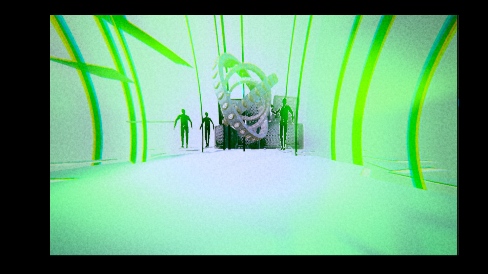
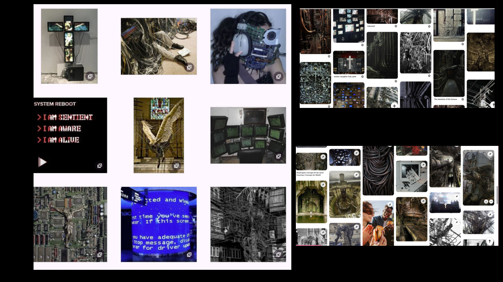
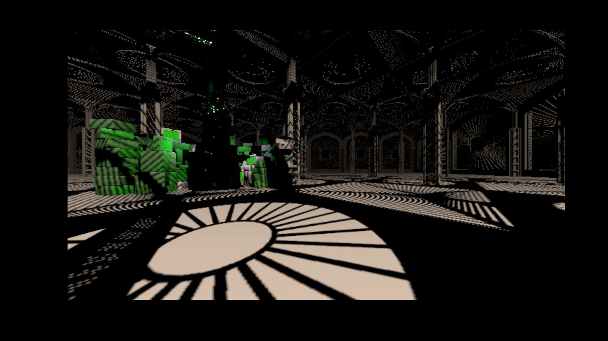
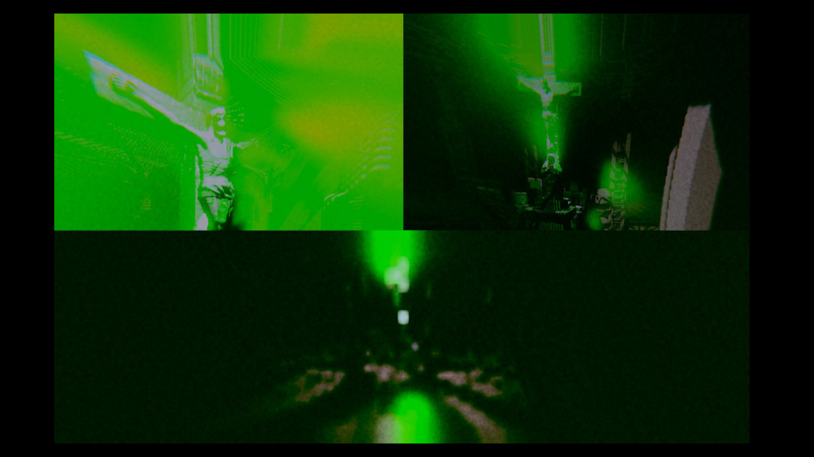
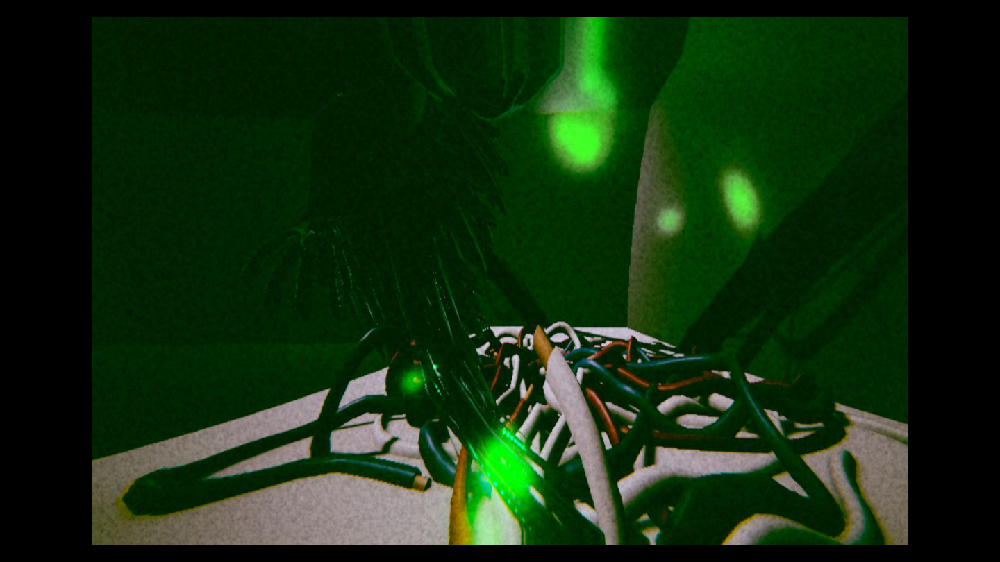
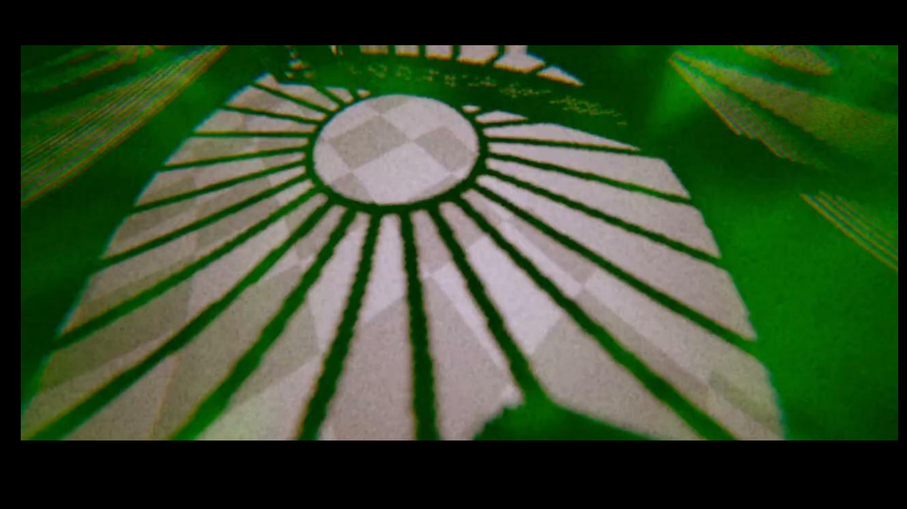

Divine Circuit is an atmospheric walking simulator built for Parsons’ Impossible Environments brief: explore the remains of a vast, ancient system—part god, part machine, part forgotten code. As you move through decaying temples of circuitry and overgrown cables, voiceover guides you with cryptic reflections on humanity’s fusion with technology. Haunting visuals, ambient sound, glitch aesthetics, and surreal post-processing evoke a world where worship, routine, and automation have become indistinguishable. It isn’t about solving puzzles—it’s about witnessing something bigger than yourself, and realizing you’re already part of it.
The first thing that came to mind when I heard the word was a world where divinity and machinery blur—where logic breaks down and you’re left inside something ancient, sacred, and technological. I wanted to explore that feeling not only through visuals but through mechanics that feel disorienting and meaningful.
Each scene reflects a different stage of the experience. Scene 1: you fly—transcendence, weightless inside something larger than you. Scene 2: perspective warps as you look around—distortion, uncertainty, lost in the system. Scene 3: everything feels normal again, but it isn’t—acceptance. You’ve become part of the machine, and it feels natural now. The goal was a narrative that doesn’t just tell you something, but makes you feel it through mechanics and world.
The aesthetic compares technological creation to divine creation—humanity with god(s), machinery with angels—drawing connections between biological forms, religious motifs, and mechanical structures. Themes include techno-religion, digital worship, forgotten rituals of automation, and the body as system / the system as god.
Influences include Ghost in the Shell, Blade Runner, Ergo Proxy, and NaissanceE—sci-fi where human, machine, and spirit blur; abandoned spaces, glitch aesthetics, and metaphysical questions. I’ve always been drawn to sci-fi that feels more like philosophy than action. Divine Circuit asks: what if technology forgot us—but we kept praying anyway?




